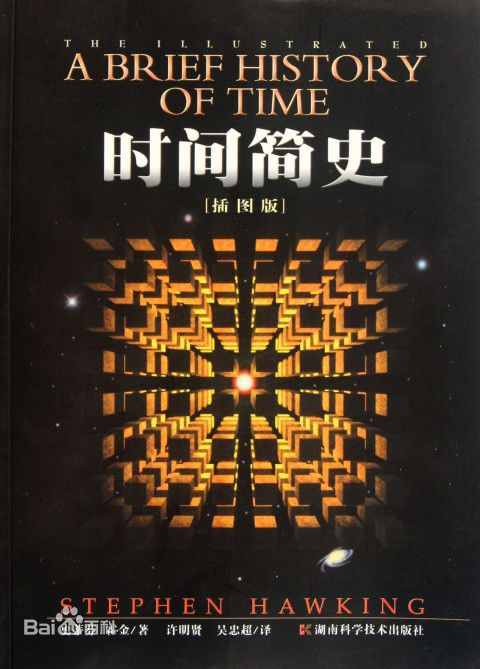
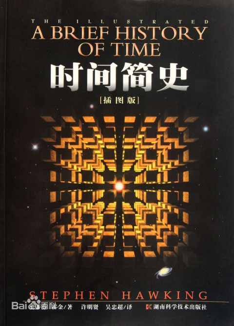

关于此网站
本网站致力于为每一个爱书人士推出能激励个人成长的好书！只有当一本书提供了精神成长、工作技能的提升，才会被我们所推荐！读书的益处:
1. 读书可以增加谈吐深度2.读书可以保持大脑的活跃
3.读书可以使人抵抗孤独
4.读书可以释放压力
5.读书使人明智
小组信息
学院：经贸学院班级：17电子商务B2班
小组：“高尔基”小组
《时间简史》
《时间简史》是英国物理学家斯蒂芬·威廉·霍金创作的科普著作，首次出版于1988年。
全书共十二章，讲述了关于宇宙本性的最前沿知识，包括：我们的宇宙图像、空间和时间、膨胀的宇宙、不确定性原理、黑洞、宇宙的起源和命运等内容，深入浅出地介绍了遥远星系、黑洞、粒子、反物质等知识，并对宇宙的起源、空间和时间以及相对论等古老命题进行了阐述。
在该书里，霍金探究了已有宇宙理论中存在的未解决的冲突，并指出了把量子力学、热动力学和广义相对论统一起来存在的问题，该书的定位是让那些对宇宙学有兴趣的普通读者了解他的理论和其中的数学原理。
在这部书中，霍金带领读者遨游外层空间奇异领域，对遥远星系、黑洞、夸克、“带味”粒子和“自旋”粒子、反物质、“时间箭头”等进行了深入浅出的介绍，并对宇宙是什么样的、空间和时间以及相对论等古老问题做了阐述，使读者初步了解狭义相对论以及时间、宇宙的起源等宇宙学的奥妙。
在发表《最初的宇宙》不久之后，霍金决定写一本将对大众极具吸引力的宇宙学著作。这本书就是《时间简史》。可惜这本书一直拖延到1985年才完稿，因为霍金在访问欧洲原子能研究机构在瑞士日内瓦的量子物理实验室的时候，不幸染上了肺炎。由于病得很严重，霍金被送进剑桥大学的阿登布鲁克医院进行了气管切开手术。这次手术虽然挽救了霍金的生命，但他再也不能使用他的嗓音了。霍金采用一个连在轮椅上的，可用手操控的小型电脑语音合成器来“说话”。这对霍金来说很不方便，但是，对于之前根本听不清他说话的听众来说，这样反倒容易理解了。在使用这个语音合成器之前，只有他身边最亲密的人能听懂他说的话。霍金的《时间简史》最终发表于1988年。
全书共十二章，讲述了关于宇宙本性的最前沿知识，包括：我们的宇宙图像、空间和时间、膨胀的宇宙、不确定性原理、黑洞、宇宙的起源和命运等内容，深入浅出地介绍了遥远星系、黑洞、粒子、反物质等知识，并对宇宙的起源、空间和时间以及相对论等古老命题进行了阐述。
在该书里，霍金探究了已有宇宙理论中存在的未解决的冲突，并指出了把量子力学、热动力学和广义相对论统一起来存在的问题，该书的定位是让那些对宇宙学有兴趣的普通读者了解他的理论和其中的数学原理。
在这部书中，霍金带领读者遨游外层空间奇异领域，对遥远星系、黑洞、夸克、“带味”粒子和“自旋”粒子、反物质、“时间箭头”等进行了深入浅出的介绍，并对宇宙是什么样的、空间和时间以及相对论等古老问题做了阐述，使读者初步了解狭义相对论以及时间、宇宙的起源等宇宙学的奥妙。
在发表《最初的宇宙》不久之后，霍金决定写一本将对大众极具吸引力的宇宙学著作。这本书就是《时间简史》。可惜这本书一直拖延到1985年才完稿，因为霍金在访问欧洲原子能研究机构在瑞士日内瓦的量子物理实验室的时候，不幸染上了肺炎。由于病得很严重，霍金被送进剑桥大学的阿登布鲁克医院进行了气管切开手术。这次手术虽然挽救了霍金的生命，但他再也不能使用他的嗓音了。霍金采用一个连在轮椅上的，可用手操控的小型电脑语音合成器来“说话”。这对霍金来说很不方便，但是，对于之前根本听不清他说话的听众来说，这样反倒容易理解了。在使用这个语音合成器之前，只有他身边最亲密的人能听懂他说的话。霍金的《时间简史》最终发表于1988年。
关于书籍的格言
为乐趣而读书。 —— 毛姆 读书之法，在循序而渐进，熟读而精思。 —— 朱熹
读书使人心明眼亮。 —— 伏尔泰